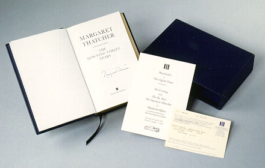

義助慰安婦 —— 李敖百件珍藏義賣藝術品（第70件） 品 名：G4. 柴契爾夫人限量簽名自傳 預估價：10 萬 成交價：20 萬 說 明： 書的考究，中國與外國不同。此書是外國書特別考究的範例，全世界只有 250 本。 柴契爾夫人為二十世紀真正的新女性。此書三面燙金，以粗鋼筆簽名，編號 72 號，是桂冠出版社老闆賴阿勝先生送李敖的。 
書的考究，中國與外國不同。此書是外國書特別考究的範例，全世界只有 250 本。 柴契爾夫人為二十世紀真正的新女性。此書三面燙金，以粗鋼筆簽名，編號 72 號，是桂冠出版社老闆賴阿勝先生送李敖的。